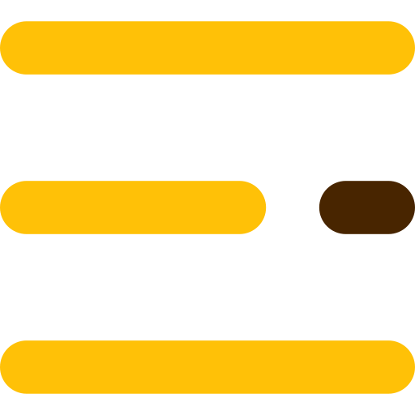

<mat-sidenav-container class="sidenav-container">
  <mat-sidenav
    #drawer
    class="sidenav"
    fixedInViewport
    [attr.role]="(isHandset$ | async) ? 'dialog' : 'navigation'"
    [mode]="(isHandset$ | async) ? 'over' : 'side'"
    [opened]="(isHandset$ | async) === false"
  >
    <mat-toolbar class="bgmine"
      >
    </mat-toolbar>
    <mat-nav-list>
      <a mat-list-item routerLink="/home"><span class="font-weight-bold">Home</span> </a>
      <a mat-list-item routerLink=""><span class="font-weight-bold">Profile</span></a>
      <a mat-list-item routerLink="/cart"><span class="font-weight-bold">cart</span></a>

      <a mat-list-item routerLink="/collection"><span class="font-weight-bold">Collection</span></a>
      <a mat-list-item routerLink="/addproduct" *ngIf="user=='admin'"><span class="font-weight-bold">Add Product</span></a>

      <a mat-list-item routerLink="/about"><span class="font-weight-bold">About</span></a>

    </mat-nav-list>
  </mat-sidenav>
  <mat-sidenav-content>
    <mat-toolbar class="bgmine">
      <button
        type="button"
        aria-label="Toggle sidenav"
        mat-icon-button
        (click)="drawer.toggle()"
        *ngIf="isHandset$ | async"
      >
        <mat-icon aria-label="Side nav toggle icon"
          ></mat-icon>
      </button>
      <!-- <span>choco-proj</span> -->

      <div class="container-fluid d-flex justify-content-between">
        <div></div>

        <div class="d-flex justify-content-between" id="navbarSupportedContent">
          <form class="d-flex justify-content-between">
            <input
              class="form-control me-2 shadow-sm bg-white rounded"
              type="search"
              placeholder="What are you looking for?"
              aria-label="Search"
              id="searchInput"
              name="search" #name=ngModel [(ngModel)]="searched" (keyup)="filterForName()"
            />
            <button
              class="btn shadow-sm rounded"
              type="button"
              data-live-search-takeover-cancel=""
              id="searchIcon"
            >
              
            </button>
          </form>
        </div>
        <div>
          <button class="btn" type="submit">
            
          </button>
          <button class="btn" type="submit">
            
          </button>
        </div>
      </div>
    </mat-toolbar>
    <router-outlet></router-outlet>

    <app-footer></app-footer>
    <!-- Add Content Here -->
  </mat-sidenav-content>
</mat-sidenav-container>

